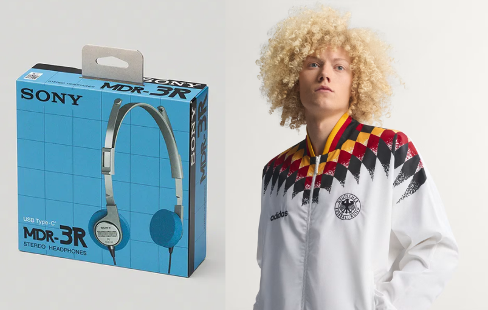

Comunicación / 1UP
Apelando a la nostalgia 🥹
Ya son varias las marcas que se suman a la onda retro y apelan a la nostalgia de sus fans/clientes. Porque en una era tan virtual, parece que aún quedan sentimientos.

Se me cae un lagrimón
Estoy viendo a diario publicaciones en redes sociales sobre los 80/90's y la vida en esa época. Muchos videos hechos con IA (a mi parecer, no están mal, pero se pueden usar imágenes de la época, porque hay). Los comentarios a dichas publicaciones son reiterativos: "Qué linda época", "La mejor de todas", "Cuánta nostalgia", "Cuando no había pantallas y podíamos salir a jugar hasta tarde", "Se me cae un lagrimón".
Te estamos escuchando
Entre tanta saturación, inmediatez, inseguridad y un futuro incierto que parece estar en manos de una inteligencia artificial, las marcas empiezan a escuchar esto y a usarlo a su favor.
Hace muy poco tiempo, Sony relanzó los auriculares que venían con el mítico Walkman. Para quien no lo sabe, era un dispositivo para reproducir casettes. El clásico auricular (o audífono) metálico con almohadillas naranjas o azules se puede conseguir por 60 dólares. Por supuesto, está adaptado a la actualidad y se conecta con un cable tipo C.
Otro ejemplo emblemático es el de Prada, la icónica marca de moda, que contrató a un dibujante de Disney y actores para su campaña de Navidad. Y sí, tiene el dinero suficiente para llevar a cabo esa campaña y a mi parecer es brillante.
También Adidas tiene una colección retro, con indumentaria de los 80's, 90's y 2000's. Y cómo no mencionar los relojes Casio, que nunca pasan de moda. Relojes clásicos y vintages como el F-91W. De hecho, reviví un Baby-G del 2002, con baterías que duran hasta 10 años.
¿Futuro incierto?
Y así podría seguir con más ejemplos, pero sería una publicación muy larga. Solo pienso, casi a fines de 2026, ¿cuánto de todo este mundo aceptamos? ¿Somos capaces de volver a lo clásico y dejar de lado tanta tecnología? Creo que depende de nosotros y del uso responsable que le demos.
P.D.: Todos los textos del blog y de la web son de mi autoría, y no pasan por ninguna IA, a pesar de que cuando paso el texto al Visual Studio Code (el editor de código que uso para hacer la web) me ofrece sugerencias todo el tiempo.
Volver a todos los artículos ←